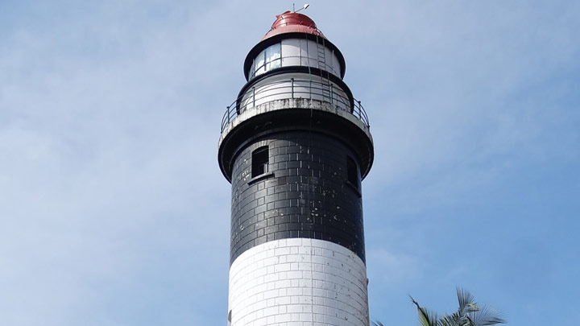
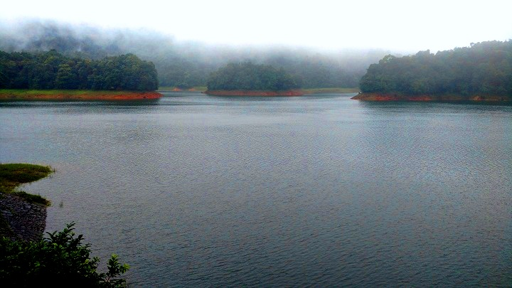
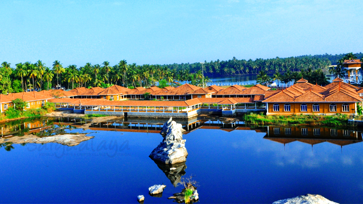

Top 5 places to visit in Kozhikode
Kappad Beach
Kappad Beach has historically played an important role in the history of Kerala. On these shores, over 500 years ago in 1498, 170 men led by Vasco- da-Gama first stepped onto Kerala. The entire State, especially the Malabar Coast, would never be the same again.
A visit to Kozhikode is incomplete without a visit to this legendary site. The spice route flourished through this Beach. A walk in and around the place gives one an idea of itshistorical relevance. The rocks and small hills add to its charm. The nearby shacks are always stocked with excellent local delicacies and tea. Migratory birds can be spotted occasionally as well. Kappad Beach is a truly majestic destination, which will always hold an important place in our history.

Thusharagiri Waterfalls
Caressed in the folds of the Western Ghats is the picturesque Thusharagiri Waterfalls. Lying 50 km from Kozhikode, the Thusharagiri Waterfalls comprises Erattumukku, MazhavilChattom, and Thumbithullum Para which can be reached through trekking. Thusharagiri or 'mist-capped peaks' gets its name from the beautiful silvery crown formed at the mountain top due to the waterfalls. The nature here will transport to a different dimension where time itself comes to a standstill.
Having a dip in the cool water here is highly recommended as well, to revive one’s body and mind. The atmosphere on the way to waterfalls is filled with the aroma of various plantations that are on every traveller’s wish list like arecanut, pepper, ginger and spices.
Mist-capped peaks, ebullient streams, boisterous waterfalls, dramatic backdrops of lush woods and plantations makes it is a wonderful destination to enjoy nature at its finest.

Thikkoti Lighthouse
The lighthouse which overlooks Velliyamkallu off the Moodadi Coast in Kozhikode district, Kerala, was built after a shipwreck, the remains of which can still be seen here. The region around the Velliyamkallu Rock is the transit home of migratory birds

Kakkayam
Kakkayam is a stunning dam site in Kozhikode that is famous for its trekking trails and boating options. This lesser known spot gives one the opportunity to explore some exquisite trails that are sprinkled around the area. Boating rides here give one an exclusive view of the dam area along with a bunch of small waterfalls and dense forests. It is the perfect place to have a quiet secluded picnic with your loved ones.

Sargalaya Arts And Crafts Village
History encounters you in lots of ways at Iringal. It might come to you as a whiff of a war fought in the bygone era, the renowned resistance of Kunjali Marakkar against the Portuguese, or it might resound in your tympanum as the squall of the ghosts of giant granites, splintered ruthlessly by gunpowder.
Iringal, a pretty little village near Vadakara in Kozhikode has a special place in the history of Kerala. We are inviting you to Iringal not to get amazed by the glorious past of this place but to experience and enjoy the unrivaled skills of the traditional craftsmen of the State.
Sargaalaya, the Kerala Arts and Crafts village at Iringal in Kerala is an initiative of the Department of Tourism, Government of Kerala. It is an exclusive place where you can not only pick a product fashioned by the traditional artisans of Kerala but also learn one or two lessons in the subtleties of crafts-making. Conceptualized as a tourist destination, Sargaalaya was developed and implemented on the Responsible Tourism model.
Put up on a sprawling 20-acre land on the shores of the Moorad River at Iringal in Kozhikode, the craft village has 60 stalls housed in beautiful cottages that are environment-friendly and ethnic in design. The management of the village is vested in the hands of the Uralungal Labour Contract Cooperative Society (ULCCS).Combining the streams of art and business, the village throws up a comprehensive platform for exhibition, sales and craft-making. The uniqueness of the craft village is that it is the only place where a tourist can witness and learn in person the nuances of crafts-making and skills of the traditional artisans of Kerala. You surely wouldn't miss a chance like this, especially if you have a great passion for art and craft. You can also carry these fascinating crafts as a souvenir to your home at a reasonable price. And if you are into craft business you can establish longstanding business relations with the artisans of Kerala. Being set up by the Department of Tourism, the venture ensures brand protection to foreign entrepreneurs and local artisans.
The wide range of products displayed here is crafted with different raw materials ranging from less expensive natural options to modern alloys. There are artifices designed with banana fibre, coir, bamboo, sand, coconut shells, husk, palm leaves, coconut leaves and screw-pine. The Crafts Design and Technology development centre at Sargaalaya provides training for craftsmen on the latest techniques of production and encourages innovation in the traditional system.
Sargaalaya also provides opportunity for the tourists to enjoy classical and folk art forms of Kerala according to their preference. The tourists can also enjoy boating in the Moorad River. A tourist circuit will soon be developed connecting Kunjali Marakkar Museum, Kolavipalam Turtle Hatchery and Vadakara Sandbanks.
